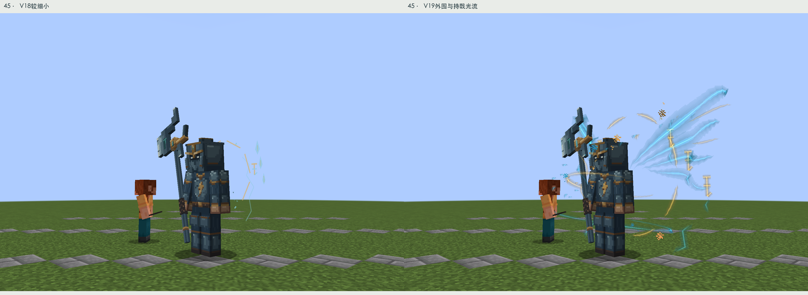
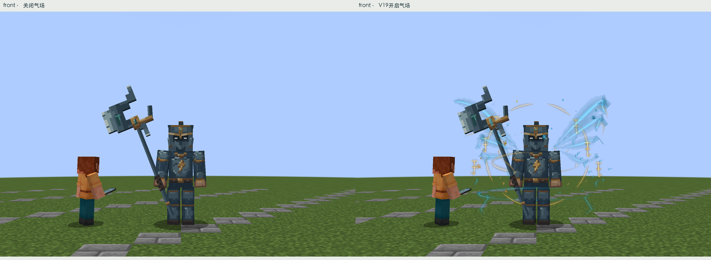
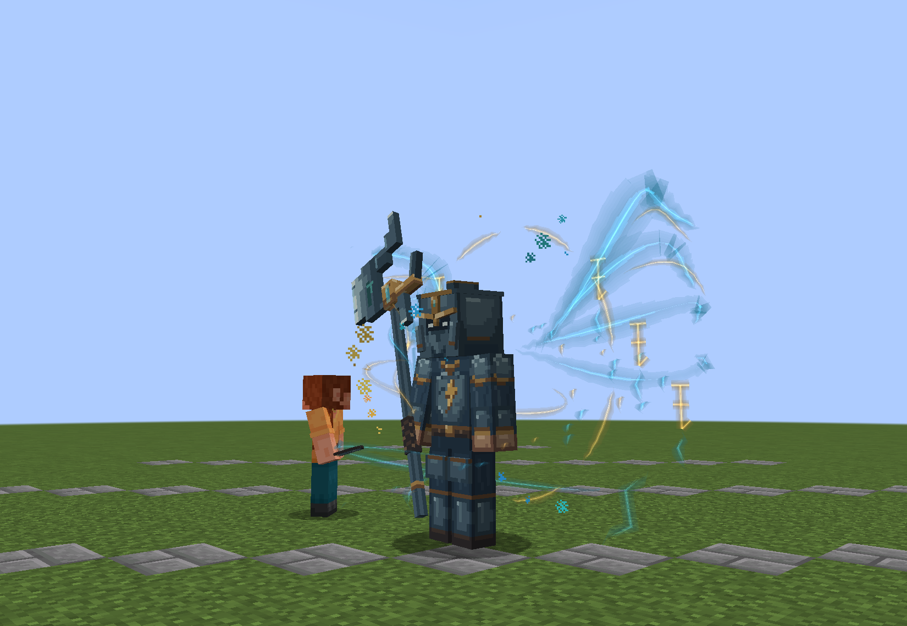
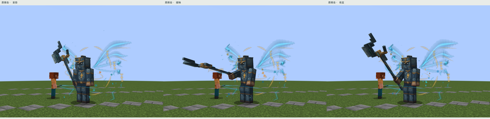
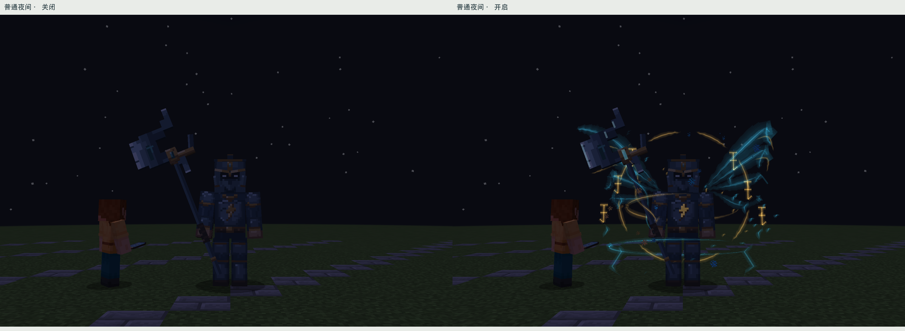
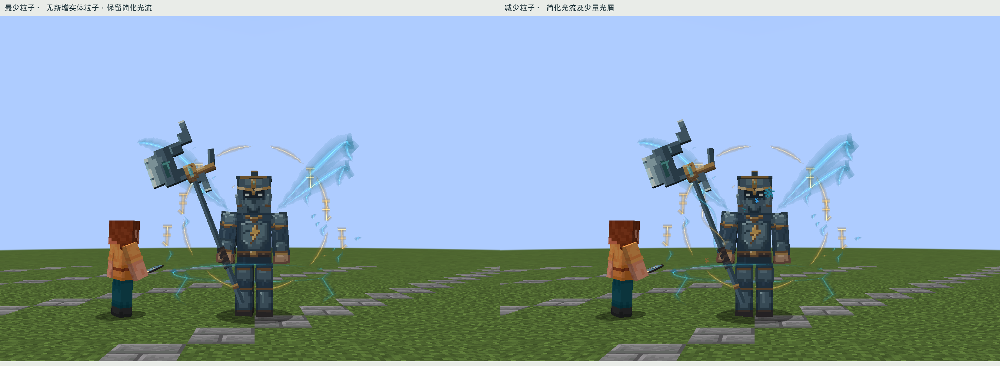
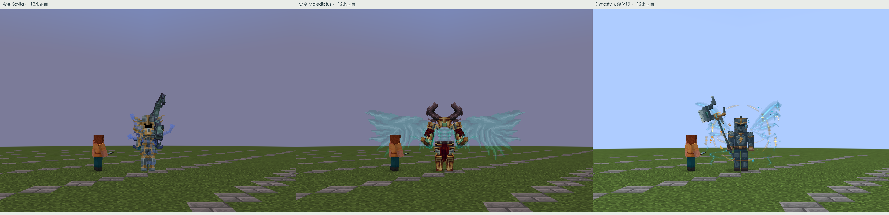

九霄天将 · 雷霆气场 V19
已认可的头盔、面部、身体、武器、基础贴图和动画文件保持不变。新增的是实际游戏中的独立光流、令纹、旋转气场和持戟导流；下方全部天将画面来自Forge 1.20.1受控实机，无外部光影、无后期辉光、无声音。
从细线背饰到大范围气流

左V18、右V19。相同8米距离、FOV70、俯仰-7°及裁切，没有单独放大新版。
关闭与开启：原始模型没有变化，中心面部与持戟方向保持可读。真实动态 · 可暂停逐帧检查

24张连续实机采样，间隔4tick，约4.8秒；这是待机气场动态，不是完整战斗录像。 0.0 秒
肩后气流左右错相起伏；环绕弧线缓慢转动；光屑持续上升。两条细光流从实际握持点沿戟杆传向玉点，跟随武器本身的动作。挥击时增强，死亡时关闭；没有新增技能预警或伤害区域。

原有攻击的蓄势、接触、恢复实机采样：用于检查光流跟随，不冒充连续录像。
相同夜间机位关闭/开启；无动态光源照亮地面，无曝光修图。
粒子设置降级：最少设置不发出新增粒子，保留简化光流；减少设置只发少量光屑。参考结论与目前差距

Scylla / Maledictus / 天将。同为12米正面、FOV70、眼高1.62、俯仰-7°，同像素裁切；灾变保留自身天空效果，人物光照均为原版日光。版权归各模组作者，仅作研究，不复制资源。参考带来的判断：外围要大，但必须围绕身体与武器组织。Maledictus的大展开让中心看起来更紧凑；Scylla的强武器方向使身体与特征连成整体。天将本轮把肩后气流、古金令环、掌部到戟杆的导流分成三层，光屑只作辅助。
仍有差距：天将的外围仍较规则，剪影变化与不同战斗阶段的专用表现少于成熟Boss。当前强化依据既有挥击状态，尚未为每个法术制作独立效果。没有环境光照、电影后期或长镜头战斗演出；这版是明显增强的Minecraft实机气场，不能据此宣布达到电影级。
| 实际查看对象 | 画面观察与限制 | 落到天将的修改 |
|---|
| Cataclysm: Scylla / Maledictus | Scylla的上身与大武器形成紧凑中心；Maledictus半透明翼展开很宽，人物仍有完整的暗色实体轮廓。 | 青白肩后长气流扩展轮廓；中心留空，金色令纹辅助；戟杆能量跟随现有武器骨骼。 来源 |
| Cataclysm: Ancient Remnant / Ender Guardian / Ignis / Netherite Monstrosity / Harbinger / Leviathan | 多数依靠大实体体量和局部能量中心，不是全身喷粒子。Ignis的剑盾、Harbinger的红色观察中心、Monstrosity的熔岩接缝各有明确位置。 | 借鉴力量位置，不改已认可的天将身体，不把8只的构造或花纹复制进来。 来源 |
| Iron: The Dead King | 战斗截图中蓝白束流连接玩家与目标；不能把玩家施法当成亡王常驻气场。 | 只借鉴效果要有起点终点，不复制攻击行为。 来源 |
| Iron: 官方图标题 Fire Boss | 头部火核和巨大刃面最醒目，背景强暖光属于宣传环境，不能当作普通Minecraft PNG自身效果。 | 聚光集中在原胸纹和武器导流，不新增头部火焰或改头盔。 来源 |
| Meet Your Fight: Rosalyne | 普通日光中身体克制，紫色刃面清晰指向攻击方向，没有大气场。 | 用刀/戟的局部亮度指向威胁，不能把此图列成大型气场证据。 来源 |
| Goety Revelation: Apollyon | 小幅官方截图可辨中心与周围紫色结构；分辨率不足判断具体粒子纹理，环境疑有额外光影。 | 仅作中心/外围分层；不声称研究了完整技能或本地2.2.7与网页版本一致。 来源 |
| Mowzie’s Mobs: Umvuthi | 金色冠状背景与暗面形成焦点，实体冠饰不等于粒子。 | 金色断环围住头肩但不遮脸。 来源 |
| Bosses of Mass Destruction: Night Lich | 夜色中少量冷色粒子与杖尖强调悬浮中心；图像较暗。 | 冷暖能量位置分明，天将夜间仍使用真实光照，不后期提亮截图。 来源 |
斗罗静帧参考：千仞雪的后方展开与武器聚光、霍雨浩相关融合技的掌部冷暖汇聚。均为第三方转载静帧，未冒充完整动画研究。
研究范围：2个斗罗相关静帧、8只灾变参考、6个其他模组角色画面。未完成“100动漫＋100Boss＋100整合包”逐项研究。愚者、落幕曲页面和其他包宣传图未核实的Boss不计数。完整证据与限制。
检查结果
构建通过（跳过通用测试）；19个受控实机状态通过，24帧待机采样。新PNG实际加载哈希与源码资源、打包JAR一致；模型、基础贴图、动画仍与V17完全相同。修复了初版光片混合伪影、武器跟随点以及测试场景延迟掉落物污染。自然遭遇、多人性能、第三方光影兼容性仍待验证。
本轮资源：TianjiangAura.java、独立渲染材质、BossCuboidRenderer中的光效接入、16×32原创光流纹理、128×128局部发光遮罩（胸纹15像素＋武器68像素）。生成源同步更新，旧V18导出入口也会调用新版，避免覆盖回退。
实机与资源检查 · 19状态记录 · 原始光效遮罩 · 4倍最近邻 · 已认可V17模型